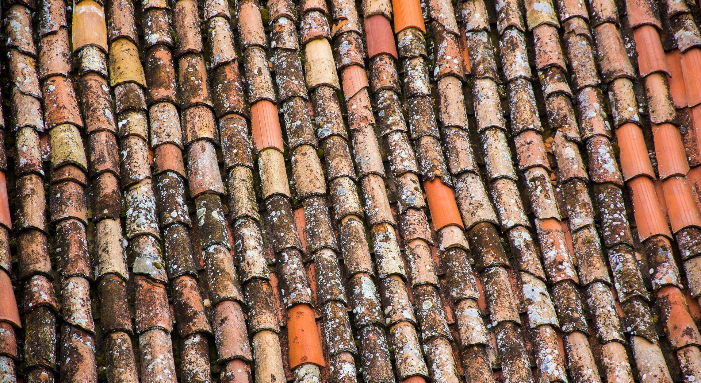
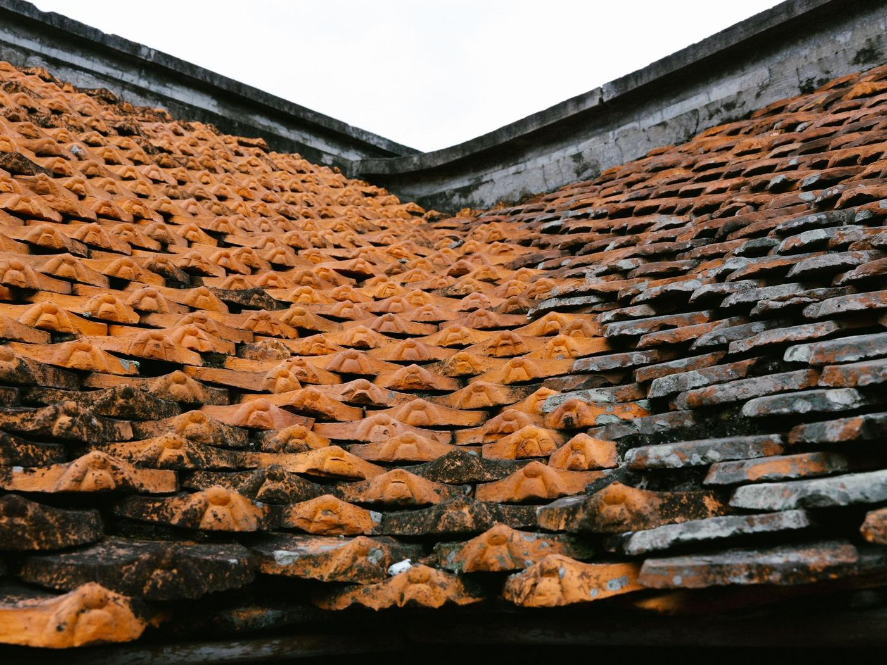
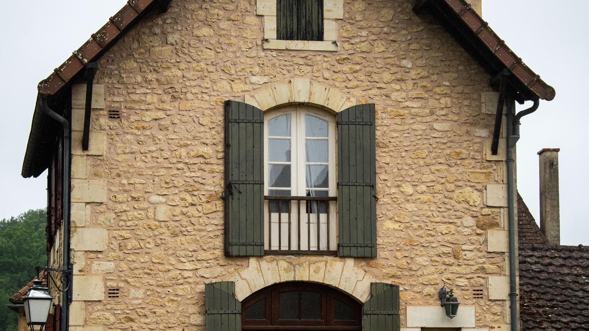

Auch · Mirande · Vic-Fezensac · tout le Gers
Démoussage de toiture dans le Gers.
Nettoyage à basse pression, traitement, et si votre tuile le permet, un hydrofuge ou une peinture qui la protège pour des années.
Photo d’illustration : tuile canal colonisée par les lichens.
Couvreur dans le Gers Nettoyage et démoussage
Sur la tuile canal, la mousse ne fait pas que salir.
La terre cuite est poreuse : elle boit. Un tapis de mousse la garde mouillée entre deux pluies, le gel de janvier la fait éclater, et les racines soulèvent les tuiles de couvert.
- Basse pression : la tuile est nettoyée, pas décapée
- Traitement anti-mousse, hydrofuge ou peinture au choix
- Tuiles cassées signalées et remplacées au passage
- Photos avant et après, devis gratuit
Faire nettoyer mon toit
Quatre champs, une minute. Warren vous rappelle lui-même pour caler le diagnostic, gratuit.
La mousse ne salit pas un toit. Elle le garde mouillé.
Un tapis de mousse se comporte comme une éponge posée sur la couverture. Tout ce qui suit vient de là.

La tuile boit
Une terre cuite saine sèche en quelques heures. Sous la mousse, elle reste humide d’une pluie à l’autre, et elle vieillit deux fois plus vite.
Le gel la fait éclater
L’eau retenue dans la tuile gèle, gonfle et la feuillette. C’est comme ça qu’une tuile saine devient gélive, puis cassante.
Les racines soulèvent
Mousses et lichens s’installent entre tuile de courant et tuile de couvert. Le recouvrement se réduit, et l’eau passe par le côté.
Les gouttières débordent
La mousse arrachée par l’orage finit dans la descente. Une gouttière bouchée déborde sur la façade, et c’est le mur qui prend l’eau.
Nettoyer sans abîmer, puis protéger.
Sur une tuile en terre cuite, la méthode compte plus que la machine. Un jet haute pression va vite, et il arrache la surface qui protège la tuile.
- 01
Diagnostic
État des tuiles, porosité, tuiles cassées, gouttières. Il vous dit si un hydrofuge a du sens sur votre toit, ou pas.
- 02
Nettoyage
Démoussage et nettoyage à basse pression, dans le sens de l’écoulement, sans envoyer d’eau sous les tuiles.
- 03
Traitement
Anti-mousse pour finir de tuer les racines, puis hydrofuge incolore ou peinture de toiture si vous l’avez choisie.
- 04
Finitions
Tuiles fendues remplacées, gouttières dégagées, abords nettoyés, photos remises.
Compris à chaque intervention
- Nettoyage de toute la surface
- Basse pression, jamais de décapage
- Traitement anti-mousse
- Gouttières et descentes dégagées
- Abords et terrasse nettoyés
- Photos avant et après
Ses chantiers, pas une banque d’images.
Mirande, Auch, et ailleurs dans le Gers : les photos que Warren prend lui-même sur ses chantiers, maisons comme commerces.


Le même toit, avant et après.
Le résultat se voit tout de suite. Ce qui compte, c’est l’hiver suivant : une tuile qui sèche entre deux pluies ne gèle plus.


Photos d’illustration du métier. Ses vrais chantiers de nettoyage sont plus haut, et vos propres photos vous sont remises.
Combien coûte un démoussage ?
Un démoussage se chiffre au mètre carré, mais deux toits de même surface ne coûtent pas la même chose : la pente, l’accès, l’épaisseur de mousse et la finition choisie changent tout.
Démoussage basse pression, traitement, gouttières dégagées.
Le même nettoyage, puis une protection qui retarde la repousse et redonne la couleur.
Le chiffrage est gratuit, remis après diagnostic, détaillé poste par poste. Rien ne s’ajoute en cours de chantier sans votre accord.

Les pans nord verdissent deux fois plus vite.
Un nettoyage tous les cinq à huit ans, avec un traitement, suffit à garder une tuile saine pendant des décennies.
Ce que disent ses clients.
Ce qu’il ne fait pas :
Tout le Gers, depuis Mouchès.
L’atelier est à Mouchès, entre Auch et Mirande : le centre du département est à moins d’une demi-heure. La Haute-Garonne et les Pyrénées-Atlantiques se font aussi, sur demande.
- Auch
- Mirande
- Vic-Fezensac
- Masseube
- Marciac
- Seissan
- Fleurance
- L’Isle-Jourdain
- Condom
- Gimont
- Lectoure
- Eauze
- Marciac
- Samatan
- Lombez
- Nogaro
- Riscle
- Montesquiou
- Pavie
- Barran
- Castelnau-Barbarens
- Saint-Jean-le-Comtal
- Montréal
- Plaisance
- Mauvezin
Votre commune n’est pas dans la liste ? Un appel suffit pour savoir si le déplacement est possible.

Vous vous demandez…
Une question qui n’est pas là ? Vous aurez l’artisan au bout du fil, pas un commercial.
06 16 95 49 47Utilisez-vous un nettoyeur haute pression ?
Un hydrofuge, ça sert vraiment ?
Hydrofuge ou peinture de toiture ?
À quelle fréquence faut-il démousser ?
Combien de temps dure l’intervention ?
Le traitement est-il dangereux pour le jardin ?
À quelle saison intervenez-vous ?
Que se passe-t-il si vous trouvez des tuiles cassées ?
Votre toit a verdi ? Ça se règle avant l’hiver.
Donnez la commune et une idée de la surface : vous aurez un ordre d’idée au téléphone, et un devis ferme après le diagnostic.
- Un rappelDans la journée, par Warren lui-même.
- Un diagnosticSur le toit, gratuit, photos à l’appui.
- Un devis écritPoste par poste, sans travaux superflus.
- Vous décidezRien n’est engagé tant que rien n’est signé.
Atelier : Los Beasos, 32300 Mouchès
Demander mon devis
Quatre champs, un rappel dans la journée.